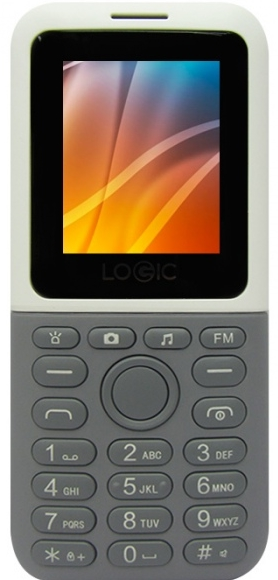

Celulares
Don Carlos
Celulares Basicos
Los celulares basicos tienen usos muy limitados debido a que cadecen de algunos aspectos que los hacen poco potentes y solo se puedan usar para facebook por ejemplo
Celulares Semi Basicos
Estos celulares al ser mas potentes te permiten muchas mas cosas por ejemplo puedes jugar videojuegos medianamente demandantes o simples sin mucho problea
Celulares "Avanzados"
Con estos puedes jugar juegos muy demandantes pero tambien puedes editar videos y demas cosas sin problema debido a su potencia
Estos son ejemplos de algunos telefonos
Telefono basico
Telefono Semi basico
Celulares "Avanzados"
Telefonos
Como pudiste ver mostramos un poco la clasificacion de los telefonos celulareas para orientarse un poco

Consejo
Ante cualquier duda a la hora de comprar algun telefono celular lo mejor es investigar para que lo necesitamos y asi podamos eligir el mas adecuado